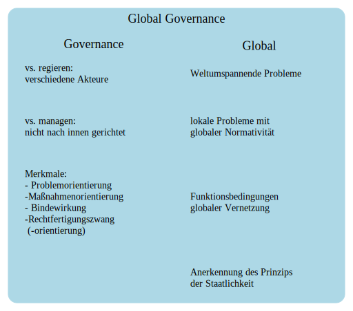

Code
from graphviz import Source
from IPython.display import display
dot = '''
digraph G {
rankdir=TD;
node [shape=plaintext, width=3];
edge [style=invis];
subgraph cluster_0 {
label = "Global Governance";
labelloc = "t";
fontsize = 18;
style = "filled,rounded";
color = "lightblue";
// Cluster 1
subgraph cluster_1 {
label = "Governance";
labelloc = "t";
{ a1 -> a2 -> a3; }
a1 [label="vs. regieren:\l verschiedene Akteure\l"];
a2 [label="vs. managen:\l nicht nach innen gerichtet\l"];
a3 [label = "Merkmale:\l - Problemorientierung\l -Maßnahmenorientierung\l - Bindewirkung\l -Rechtfertigungszwang\l (-orientierung)\l"];
}
// Cluster 2
subgraph cluster_2 {
label = "Global";
labelloc = "t";
penwidth = 1;
{b1 -> b2 -> b3 -> b4; }
b1 [label="Weltumspannende Probleme\\l"];
b2 [label="lokale Probleme mit\\l globaler Normativität\\l"];
b3 [label="Funktionsbedingungen\l globaler Vernetzung\\l"];
b4 [label="Anerkennung des Prinzips\l der Staatlichkeit\l"]
}
}
}
'''
src = Source(dot, format="svg")
display(src)